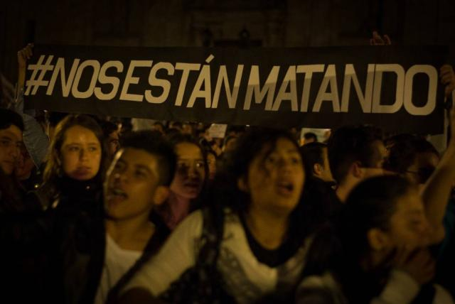

Carlos Alberto Romero Martínez, un reconocido líder campesino, representante legal y líder de la Asociación de pequeños Agricultores del Magdalena Medio, es el último líder social asesinado en Colombia. su homicidio se registró el pasado 16 de diciembre en La Dorada, Caldas, cuando hombres armados lo atacaron a balas en la plaza del mercado del referido municipio.
Tan solo 5 días antes de este crimen, la Corte Constitucional declaró el estado de cosas inconstitucional (ECI) ante la violencia que persiste contra los defensores de DD. HH. en el país.
Las cifras de la Fiscalía dan cuenta que entre enero y noviembre de este año se reportaron 148 homicidios de defensores de derechos humanos (es decir, tres cada semana) y el año pasado fueron 212; mientras que la Defensoría del Pueblo reportó que en el mismo periodo fueron asesinados 163 líderes, lideresas y personas defensoras de derechos humanos.
Sin embargo, el 21 de diciembre la Oficina del Alto Comisionado de las Naciones Unidas para los Derechos Humanos en Colombia reportó que entre el 1.º de enero y el 30 de noviembre de 2023 tuvo conocimiento de 214 alegaciones de homicidios de personas defensoras. De esta cifra, la entidad ha verificado 69 casos, 47 casos están en proceso de verificación y 98 casos son no concluyentes.
El organismo indica que los casos verificados son aquellos en los que se ha comprobado el carácter de defensor de la persona, de acuerdo con la definición de la ONU sobre defensores de derechos humanos. De la cifra entregada por la entidad, el número da cuenta de una leve disminución de los casos verificados respecto al mismo periodo de 2022, cuando la oficina documentó 236 alegaciones de homicidios de personas defensoras. Se verificaron 89 casos, 31 quedaron en proceso de verificación y 116 casos no fueron concluyentes.
De los casos verificados en los últimos 11 meses, la ONU señala que, al menos, 8 fueron mujeres; de ellas, dos eran afrodescendientes, una era indígena y tres eran campesinas y dos pertenecían a otros grupos.
De los casos confirmados, 60 eran hombres, 19 de ellos indígenas, 9 afrodescendientes, 19 campesinos y 13 dos pertenecían a otros grupos. Además, se documentó una víctima con identidad de género no binario.
La entidad destacó que los departamentos que más casos registraron fueron Cauca, en donde hubo 15 homicidios; en Nariño y Valle del Cauca se registraron 8 casos en cada uno; en Norte de Santander y Arauca, 5 casos en cada departamento, y en Caquetá, 4 casos. Mientras que los departamentos de Atlántico, Putumayo, Magdalena, Cesar, Córdoba, Huila, Antioquia y Guaviare registraron 2 casos.
